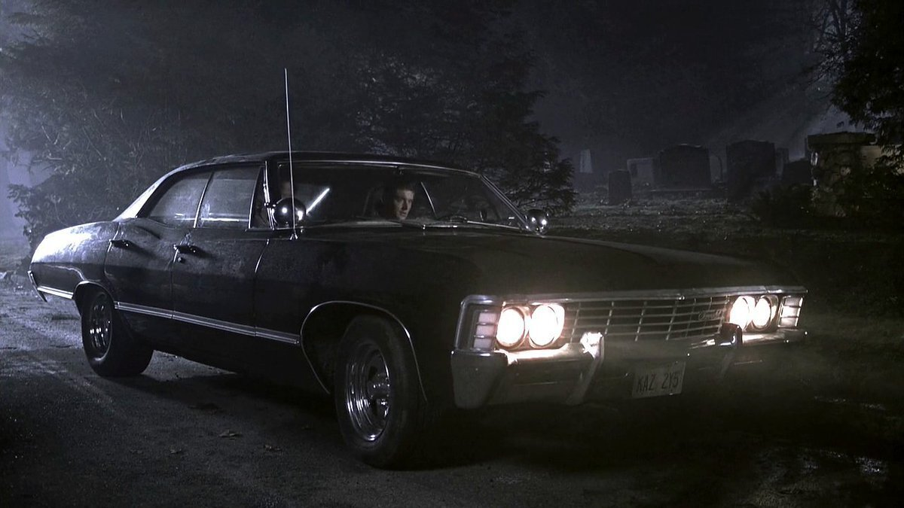
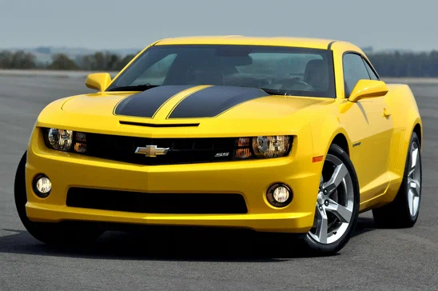

Шевроле Импала 1967 года
Общие сведения
Шевроле Импала 1967 года выпуска была частью седьмого поколения автомобилей Impala, которое производилось с 1965 по 1970 год. Этот автомобиль был одним из самых популярных в своем классе и одним из самых продаваемых в Америке. В 1967 году Impala была обновлена, чтобы предоставить покупателям более современный, спортивный и роскошный автомобиль.
Дизайн и особенности
Дизайн кузова: Шевроле Импала 1967 года была оснащена длинным, элегантным кузовом с острыми, прямыми линиями, что стало важным дизайнерским решением для той эпохи. Импала этого года имела более агрессивную и спортивную внешность по сравнению с предыдущими моделями, с большими фарами и обновленной решеткой радиатора.
- Обновленный передний и задний бампер
- Стильные большие фары, придающие автомобилю более динамичный вид
- Обновленная решетка радиатора с более крупными горизонтальными элементами
- Прочные кузовные панели с изысканными линиями
Интерьер
Интерьер Шевроле Импала 1967 года также был обновлен, что делало его более комфортным и удобным для водителя и пассажиров. Кожа, ткань и другие материалы в отделке сидений были высокого качества, что обеспечивало максимальный комфорт. Также была установлена новая приборная панель с улучшенной эргономикой, а в качестве дополнительного оснащения предлагались современные системы аудио.
Технические характеристики
Шевроле Импала 1967 года предлагалась с несколькими вариантами двигателей:
- Стандартный 3.8-литровый V6 двигатель
- Более мощные V8 двигатели объемом 5.4 и 6.7 литра (от 250 до 385 л.с.)
- Трансмиссии: 3- и 4-ступенчатая механическая коробка передач, автоматическая коробка передач Powerglide
Популярность и культурное значение
Шевроле Импала 1967 года в сериале «Сверхъестественное»: Эта модель автомобиля приобрела мировую известность благодаря сериалу «Сверхъестественное» (Supernatural). В сериале она стала культовой машиной, принадлежащей братьям Винчестерам. Импала использовалась как транспортное средство для борьбы с демонами, монстрами и различными сверхъестественными существами. Для персонажей сериала эта машина стала не только средством передвижения, но и символом их борьбы и жертвенности.
Автомобиль стал не просто частью шоу, а его настоящей звездой. Импала стала символом для поклонников сериала, и многие фанаты начали коллекционировать модели этого автомобиля, а также воссоздавать его внешний вид, как в сериале.
Производственные данные
В 1967 году было продано около 800,000 автомобилей Шевроле Импала, что сделало ее одним из самых продаваемых автомобилей в Америке. В этот период Impala была доступна в разных вариантах кузова, включая седан, купе и универсал.
Заключение
Шевроле Импала 1967 года остается иконой американского автопрома. С её мощными двигателями, отличным дизайном и комфортом она продолжает привлекать внимание коллекционеров и автолюбителей. Этот автомобиль стал символом своей эпохи и одним из самых знаковых представителей 60-х годов.
Chevrolet Camaro
Общие сведения
Chevrolet Camaro — это спортивный автомобиль, производимый компанией Chevrolet с 1967 года. Camaro был создан как конкурент популярного Ford Mustang. В разных поколениях Camaro сочетает агрессивный внешний вид и высокие характеристики, что сделало его одним из самых узнаваемых автомобилей в мире. Модель также известна своим использованием в различных фильмах и телевизионных шоу, включая франшизу "Трансформеры", где она была превращена в Бамблби.
Дизайн и особенности
Дизайн кузова: Camaro всегда привлекал внимание своим динамичным и агрессивным дизайном. С самого первого поколения автомобиль был оснащен спортивными чертами, такими как широкая решетка радиатора, мускулистые формы и аэродинамические линии, подчеркивающие его высокую производительность. В последних моделях сохраняются традиции, но дизайн был усовершенствован для еще большей привлекательности.
- Широкая и агрессивная решетка радиатора
- Спортивные линии кузова с акцентом на аэродинамику
- Мощные бамперы и светодиодные фары
- Улучшенные кузовные панели с современными элементами
Интерьер
Интерьер Camaro всегда был ориентирован на комфорт и удовольствие от вождения. В более поздних моделях используются премиальные материалы отделки, а также новейшие мультимедийные системы. Приборная панель и органы управления были усовершенствованы для более удобного доступа водителя к важнейшим функциям автомобиля.
Технические характеристики
Chevrolet Camaro предлагается с несколькими вариантами двигателей, которые обеспечивают отличную производительность:
- 3.6-литровый V6 двигатель (275 л.с.) для базовых моделей
- 6.2-литровый V8 двигатель (455 л.с.) для версии SS
- Supercharged 6.2-литровый V8 (650 л.с.) для модели ZL1
- Трансмиссии: 6-ступенчатая механическая коробка передач и 8-ступенчатая автоматическая трансмиссия
Популярность и культурное значение
Chevrolet Camaro в кино: Camaro, особенно модели из фильма *Трансформеры*, приобрел культовый статус. В частности, модель 1967 года использовалась в фильме как автомобиль Бамблби, который является одним из главных персонажей франшизы. Этот автомобиль стал символом силы и верности, что сделало его любимым у поклонников фильмов и автолюбителей.
Также Camaro часто появляется в других фильмах и телешоу, а благодаря своему статусу и мощным характеристикам, он стал одним из самых популярных автомобилей среди молодежной аудитории.
Производственные данные
Выпуск первого Chevrolet Camaro начался в 1966 году, а продажи стартовали в 1967 году. С тех пор Camaro прошел через несколько поколений, каждая из которых привнесла что-то новое. В 2016 году был выпущен обновленный Camaro, который продолжил традиции бренда, предлагая сочетание мощности, дизайна и комфорта.
Заключение
Chevrolet Camaro является настоящей иконой среди спортивных автомобилей. С его агрессивным дизайном и впечатляющими техническими характеристиками, он продолжает вдохновлять автолюбителей по всему миру.